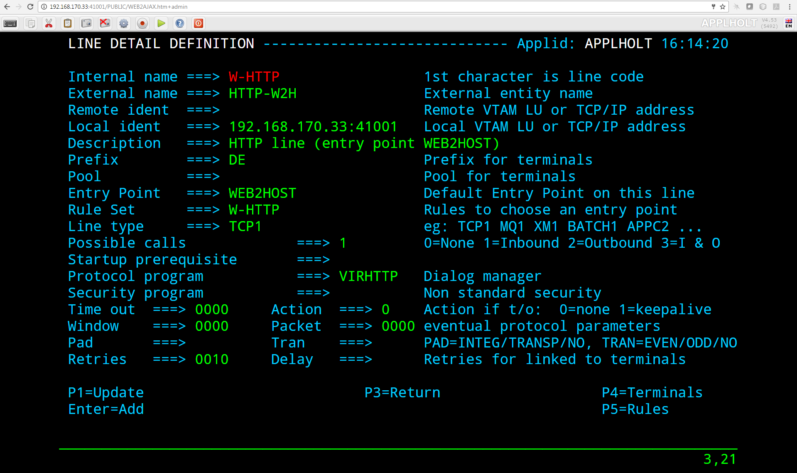
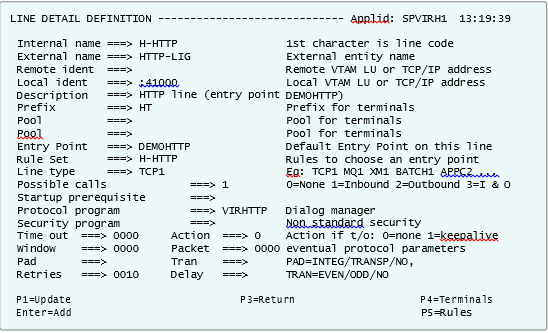
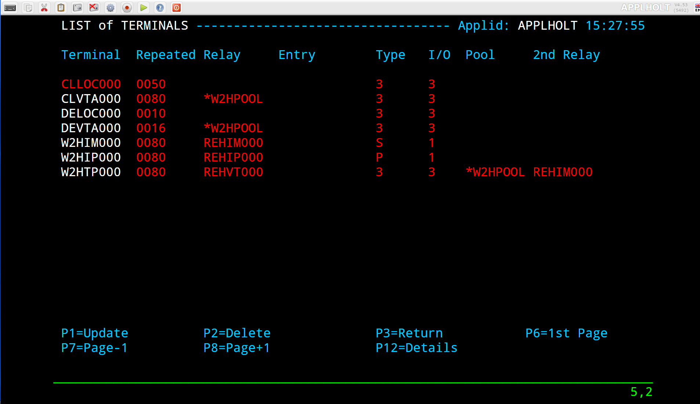
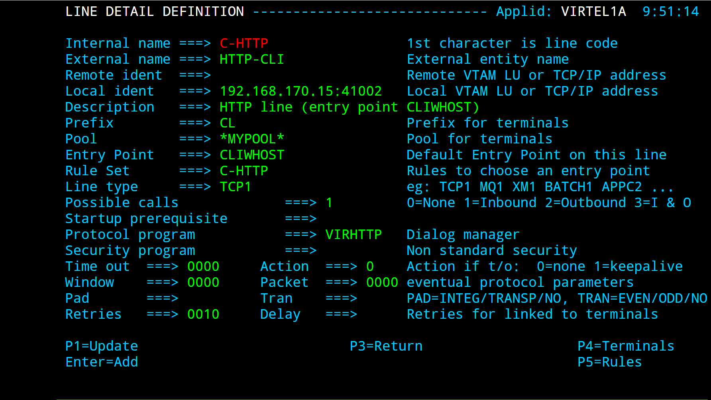

Connectivity Reference¶


VIRTEL Connectivity Reference
Version : 4.53
Release Date : 24 Sep 2014 Publication Date : 13/10/2014
Syspertec Communication
196, Bureaux de la Colline 92213 Saint-Cloud Cedex Tél. : +33 (0) 1 46 02 60 42
Note
Reproduction, transfer, distribution, or storage, in any form, of all or any part of the contents of this document, except by prior authorization of SysperTec Communication, is prohibited.
Every possible effort has been made by SysperTec Communication to ensure that this document is complete and relevant. In no case can SysperTec Communication be held responsible for any damages, direct or indirect, caused by errors or omissions in this document.
As SysperTec Communication uses a continuous development methodology; the information contained in this document may be subject to change without notice. Nothing in this document should be construed in any manner as conferring a right to use, in whole or in part, the products or trademarks quoted herein.
“SysperTec Communication” and “VIRTEL” are registered trademarks. Names of other products and companies mentioned in this document may be trademarks or registered trademarks of their respective owners.
1. Introduction¶
1.1 Configuration Elements¶
The VIRTEL configuration is stored in a VSAM file called the “ARBO file” (VIRARBO). The ARBO file contains various types of elements, which are described in this chapter:
- Lines, which represent connections between VIRTEL and other network entities
- Rules, which are applied to incoming calls in order to establish the appropriate entry point for the call
- Entry points, which define how the call is processed by VIRTEL and contain a list of transactions available to the incoming call
- Transactions, which define VTAM applications or external servers which process incoming calls
- Terminals, which represent the virtual circuits through which calls flow between VIRTEL and its partners
- External servers, which define the connection parameters used by VIRTEL to connect outgoing calls to other network entities
1.2 Configuration Elements¶
The VIRTEL system administrator uses a set of programs called sub-applications to display and update the various elements in the VIRTEL configuration. The sub-applications are invoked via the Configuration Menu or the Sub- Application Menu. The Configuration Menu, introduced in VIRTEL version 4.27, provides access to the most commonly- used sub-applications required for VIRTEL Web Access and XOT. It is invoked from the VIRTEL Multi-Session menu via a transaction which calls module VIR0022. The Sub-Application Menu, invoked from the Configuration Menu, gives access to all of the sub-applications, including those rarely used today.
If you log on to VIRTEL in 3270 mode using the default entry point (“PC”), the VIRTEL Multi-Session menu offers the choice F1 – Admin to invoke the Configuration Menu.
The first screen you will see is the Multi-Session menu:
{kind=link}
Fig.1 - The VIRTEL Multi-Session menu
Press [F1] to display the Configuration Menu:
{kind=link}
Fig.2 - Configuration Menu
To invoke a sub-application, press one of the function keys shown in the menu (for example, F1 – Lines). To exit from the Configuration Menu and return to the Multi-Session menu, press CLEAR.
You can optionally display the Sub-Application Menu by pressing [PA2]:

Fig.3 - Sub-Application Menu
To invoke a sub-application, press one of the function keys shown in the menu (for example, F7 – Videotex Definitions). To exit from the Sub-Application Menu and return to the Configuration Menu, press CLEAR or PA2.
1.3 Sub-application Operation¶
The sub-applications have certain common operational characteristics:
- Most of the sub-applications start by displaying a list of the elements currently defined in the configuration file.
- To scroll up or down the list, press [F7] or [F8].
- To find an element in the list, overtype the name of the first element displayed with the first few characters of the element name you are looking for, then press [ENTER].
- To display the detail screen for a particular element, place the cursor on the element name in the list and press [F12].
- To alter the definition of an element, type the desired changes into the appropriate fields in the list and press [F1]. VIRTEL recognizes the changes only when you press [F1]. If you change a transaction you must also press [F1] on the entry point that the transaction belongs to.
- To delete an element, place the cursor on the element name in the list and press [F2]. Then press [F2] again to confirm the deletion.
- To create a new element, place the cursor on a part of the screen outside the list, and press [F12]. A detail screen will be displayed with all fields blank. Fill in the fields and press [ENTER].
- To copy an existing element, first press [F12] to display the detail screen for the existing element, then overtype the element name with the desired name of the new element, and press [ENTER].
- To rename an element, first copy it to a new element as above, then delete the old element.
2. Lines¶
2.1. Introduction¶
2.1.1. Access to the application
The “Line” is one of the basic elements of the VIRTEL configuration. A line represents a connection between VIRTEL and another network element: an NPSI MCH, an X25 router, an X25 application (GATE, PCNE), a CICS system, a VIRNT server, an SMTP server; alternatively, a line can represent a VIRTEL server (HTTP, SMTP) listening on a TCP/IP port.
This chapter describes all the functions associated with the definition of lines. A detailed example will be presented later in this chapter for each type of line.
The Line Management sub-application is invoked by pressing [PF1] in the Configuration Menu, by pressing [PF14] in the Sub-Application Menu, or via the Multi-Session Menu using a transaction which calls module VIR0046. This sub- application allows the management of all the line parameters under VIRTEL control.
2.1.2. Security
When the security subsystem is active, access to Line Management sub-application from the Configuration Menu or the Sub-Application Menu is controlled by the resource $$LINE$$.
When accessed by a transaction, normal transaction security rules will apply. Security management is described in chapter 8 of the VIRTEL Installation Guide.
2.1.3 Objectives
This sub-application facilitates the definition of X25 and Reverse X25 lines, APPC connections, and TCP/IP lines. When the sub-application is started, it first displays a summary of existing definitions in alphanumeric order.
2.2. Summary of existing definitions¶
The first screen shows a summay of existing line definitions in alphanumeric order:
Fig.4 - Summary of existing lines
2.2.1 Associated Functions
- Positioning a line
- In browse, alter, or delete mode, it is possible to scroll the list of lines under the control of VIRTEL.
- Search
- Type the name (or partial name) of the required entity on the first line under the heading “Internal Name”, then press [Enter].
- [PF6]
- Return to the first page of the list.
- [PF7]
- Display the previous page.
- [PF8]
- Display the next page.
- Modifying a line
Type the desired modifications into the appropriate fields then press [PF1]. Multiple definitions can be modified at the same time. If the modification affects a field not displayed on the summary screen, first position the cursor on the definition concerned, then press [PF12] to access the definition detail screen.
Modifications are not recognized until you press the [PF1] key. Certain modifications require a restart of the VIRTEL system.
- Deleing a line
- Position the cursor under the name of the entity to be deleted, then press [PF2]. The line associated with the entity to be deleted then appears highlighted, accompanied by the message CONFIRM DELETE. Then press [PF2] again to confirm deletion. The message DELETE OK confirms successful completion of the operation. Repeat the procedure for each entity to be deleted.
- Adding a line
- To add a new definition, press [PF12] at the summary screen, either with the cursor on an existing definition to copy its attributes, or on an empty line to create a new definition from a blank screen.
2.3. Parameters of the line¶
Pressing [PF12] at the line summary screen displays the line detail definition screen. This sub-application allows the definition of the various parameters for each type of line.

Fig.5 - Line detail definition screen
- Internal name
- Internal name of the line. This is the name by which VIRTEL refers to the line internally. It must be unique within a VIRTEL instance.
- External name
- External name of the line. This name appears in certain console messages. It can be used, for example, to display the real name of the line or link.
- Remote ident
- This field contains the name or address of the remote partner. Usage depends on the line type and protocol. The contents of this field are described for each line type in the detailed examples which follow.
- Local ident
This field contains the name or address used by VIRTEL. Usage depends on the line type and protocol. The contents of this field are described for each line type in the detailed examples which follow.
For an IP connection, this field represents the listening port opened by VIRTEL. The port can be specified in any of the following forms:
- : pppp
- VIRTEL opens port pppp on the default home IP address of the host TCP/IP. For example, :2048
- nnn.nnn.nnn.nnn: pppp
- VIRTEL opens port pppp on the indicated IP address. nnn.nnn.nnn.nnn must be a valid HOME address defined in the host TCP/IP. For example, 192.168.0.100:2048
- 0: pppp
VIRTEL opens port pppp without associating itself with a particular IP address. VIRTEL can receive calls on any HOME address defined in the host TCP/IP. For example, 0:2048 (or 0.0.0.0:2048)
The combination of IP address and port number must be unique. No two VIRTEL can contain a TCP/IP line with the same IP address and port number, except that:
- multiple VIRTELs can use a single distributed VIPA address, provided that the address is defined with a non-zero value for the TIMEDAFFINITY parameter.
- multiple XOT lines within a single VIRTEL can listen on the same IP address and port number, providing that this same address and port number are not used by another VIRTEL.
Note
Note that the use of port numbers less than 1024 may require authorization in the profile of the TCP/IP stack (see for example the RESTRICTLOWPORTS, PORT, and PORTRANGE parameters of the z/OS Communications Server). In general, port numbers 1024 and above do not require authorization.
- Description
- Free-form description with no particular significance or syntax requirement, except for SMTP lines (see the detailed example of an SMTP line which follows).
- Prefix
- Terminal prefix associated with the line. As a general rule, the terminal prefix is a required field. It allows VIRTEL to associate a series of terminals to a line. Two lines cannot share the same group of terminals. The particular details of this field are described for each line type in the detailed examples which follow.
- Pool
- The name of a logical pool of terminals associated with the line. This pool is used for HTTP connections without predefined terminals (see “HTTP connections with non-predefined LU names”, page 20). In all other cases this field can be left blank.
- Entry Point
- Defines the default entry point used by the line. This is a required field for HTTP and SMTP lines. It is optional in all other cases. Entry point management is described in section 1.4.
- Rule Set
The name of the rule set used by this line. The same rule set can be used by more than one line. If this field is blank, no rules are used. Rules are described in detail in section .
For compatability with VIRTEL versions prior to 4.26, the rule set name is usually the same as the internal name of the line.
- Line type
Defines the category to which the line belongs. VIRTEL supports the following categories of lines:
- X25 lines
Represented by the values GATE or FASTC
Support for this type of line is governed by the presence of the parameters MINITEL=YES, GATE=GENERAL and possibly FASTC=YES in the VIRTCT.
- Reverse-X25 lines
Represented by the values /GATE, /FASTC, or /PCNE
Support for this type of line does not require any special parameters in the VIRTCT.
- APPC lines
Represented by the values APPC1 or APPC2.
APPC1 represents a link with a BATCH environment
APPC2 represents all other types of APPC link with partners such as CICS or NT. Support for this type of line does not require any special parameters in the VIRTCT.
- TCP/IP lines
Represented by the values TCP1 or TCP2.
Support for this type of line is governed by the presence of the parameter TCP1 or TCP2 in the VIRTCT. Used for HTTP, SMTP, ICONNECT, XOT, NATIVE, VIRPESIT, VIRNEOX, or VIRPASS TCP lines.
- Cross-memory lines
Represented by the values XM1 or XM2
Support for this type of line is governed by the presence of the parameter XM1 or XM2 in the VIRTCT. Used for VIRPASS XM lines.
- MQSeries lines
Represented by the values MQ1 or MQ2
Support for this type of line is governed by the presence of the parameter MQ1 or MQ2 in the VIRTCT.
- Batch lines
Represented by the values BATCH1 or BATCH2
Support for this type of line is governed by the presence of the parameter BATCH1 or BATCH2 in the VIRTCT.
- Possible calls
Determines which calls can be made on this line. Since the line management interface is common to all types of lines, all values between 0 and 3 are accepted.
In addition to being used to authorize incoming, outgoing, or both incoming and outgoing calls, this parameter also has an effect during VIRTEL startup. Any line which has “Possible calls” set to 0 will not be activated at VIRTEL startup. Also note the“Possible calls” field in the definition of the associated terminals.
- Startup prerequisite
Allows conditional startup of the line. If this field is blank, VIRTEL starts the line automatically at system startup.
- WAIT-LINE(n-xxxxxx)
- Waits for line n-xxxxxx to start. The name specified can be either the internal or external name of the other line.
- WAIT-MINUTES(nn)
- Waits nn minutes after system startup before starting this line.
- WAIT-COMMAND
- Waits for a console command LINE=linename,START (see “List of commands” in the VIRTEL Audit And Performance Guide)
- WAIT-PARTNER
- Waits until VIRTEL receives an SNA BIND command from its partner LU.
- MIMIC-LINE(n-xxxxxx)
- specifies that this line starts and stops in synchronisation with line n-xxxxxx. The name specified can be either the internal or external name of the other line.
- Protocol program
Indicates the protocol used for a TCP, XM, or MQ type line. The following values are valid for a TCP line:
- HTTP or VIRHTTP
- For an HTTP line
- NATIVE2(P) or NATIVE4(P)
- For a line in native TCP/IP mode
- SMTP or VIRSMTP
- For an SMTP line
- ICONNECT
- For a RESUME TPIPE connection with IMS Connect
- VIRPASS
- For a VIRPASS TCP connection with an VIRNT or VIRKIX system
- VIRPESIT
- For a TCP connection with a file transfer program such as CFT/IP
- VIRNEOX
- For a TCP connection with a remote program using the VIRNEOX protocol
- XOT or VIRXOT
- For an XOT line
The following values are valid for an XM line: VIRPASS
For a VIRPASS XM connection with a VIRKIX system running on the same MVSThe following values are valid for an MQ line: RAW
For communication via an MQSeries message queue- PREFIXED or PREFIX12
- For communication via an MQSeries message queue. This is similar to the RAW protocol except that VIRTEL adds 12 bytes of additional context information for the application program.
- PREFIX20
For communication via an MQSeries message queue. This is similar to the RAW protocol except that VIRTEL adds 20 bytes of additional context information for the application program.
Note
This field must not be completed for lines whose type is APPC1, APPC2, GATE, FASTC, /GATE, /FASTC, or /PCNE.
- Security program
- Reserved for future use.
- Time out
- Inactivity time in seconds after which the action specified in the following field will be taken. The value 0 inhibits the time out.
- Action if T/O
Action taken if a time out occurs. 0 = no action
1 = keepalive
- KEEPALIVE
- is a message sent by the TCP/IP stack, during periods of inactivity, to check whether the connection has been broken. The value 1 is thus only valid for lines of type TCP. After a certain number of KEEPALIVE messages have been sent without being acknowledged by the partner (the number is determined by the TCP/IP stack), the session will be considered unusable and the connection will be terminated.
- OS/390 and z/OS
- KEEPALIVE must also be activated in the PROFILE of the TCP/IP stack (refer to parameters KEEPALIVEOPTIONS or TCPCONFIG INTERVAL). For z/OS V1R7 and later, the time out value specified in the preceding field determines the interval between KEEPALIVE messages. If the time out value is zero then the default TCPCONFIG INTERVAL will be used. For OS/390 and z/OS prior to V1R7, the TCP/IP stack uses a single KEEPALIVE interval which applies to all sessions, and the time out value specified in the preceding field is ignored.
- TCP/IP for VSE
- KEEPALIVE is managed globally by the TCP/IP command SET PULSE_TIME, and the parameters “Time Out” and “Action=1” are ignored.
- Window
Window size at the packet level. This parameter is meaningful only for X25 (GATE or FASTC) and XOT lines.
Must correspond with your X25 service provider subscription, or with the X25 switch parameters if this type of equipment is used.
- Packet
Packet size. Usually 128. This parameter is meaningful only for X25 (GATE or FASTC) and XOT lines.
Must correspond with your TRANSPAC subscription, or with the X25 switch parameters if this type of equipment is used.
Replaces the PACKET global parameter in the VIRTCT for versions prior to 4.0.
- Pad
This parameter is meaningful only for X25 GATE non Fast-Connect lines and AntiGATE lines.
- INTEG
- Data without X’00’ prefix
- TRANSP
- Data with prefix
- NO
- Data with prefix
Must correspond with the NPSI parameters, or with the X25 switch parameters if this type of equipment is used.
- Tran
This parameter is meaningful only for Reverse-X25 AntiPCNE lines. Specifies whether EBCDIC/ASCII translation occurs.
- EVEN
- ASCII data from the network is translated to EBCDIC when presented to the application, and vice versa (Even Parity)
- ODD
- Ditto (Odd Parity)
- NO
- No ASCII/EBCDIC translation
- Retries
- Number of attempts to reacquire auto-activated terminals during VIRTEL startup. The delay between attempts is specified by the “Delay” parameter.
- Delay
- Interval in seconds between attempts to reacquire terminals. The default delay is 2 seconds.
2.4. Examples of line definitions¶
2.4.1 Definition of a HTTP line
When an HTTP line is started, VIRTEL becomes an HTTP server, authorising connections from a web browser to applications at the host site. Activation of this type of line is subject to the presence of the TCP1 parameter in the VIRTCT, as well as to a definition providing linkage to a file containing the HTML pages.

Fig.6 - Definition of an HTTP line
- Remote ident
- Always blank.
- Local ident
- This is the VIRTEL IP address and port number which browser users must specify in order to connect to VIRTEL. If the port number is omitted then the default is port 80. See the description of the “Local ident” field under the heading “Parameters of the line”, page 11 for more details about how to code this field.
- Prefix
- Terminal name prefix (see below).
- Entry Point
When defining an HTTP line, it is obligatory to define a default entry point. This entry point will be used for all incoming calls which do not match any of the rules of the line. The entry point contains a list of transactions, and these transactions determine which directories are used to retrieve the HTML pages, and which 3270 applications are accessible to the user.
Note
According to the type of application accessed, each transaction must refer to one of the terminal sub-groups associated with the HTTP line (see ”HTTP terminals” below).- For type 1 (Application) transactions
- The prefix will be that of the terminal sub-group with an associated relay.
- For type 2 (Virtel) or type 4 (Page) transactions
- The prefix will be that of the terminal sub-group without an associated relay.
- For type 3 (Server) transactions
- No terminal prefix is required.
- Line type
- One of the TCP/IP protocols defined in the VIRTCT, for example TCP1.
- Possible calls
Specify 1 (incoming calls only) to indicate that this line represents a listening port where VIRTEL is acting as an HTTP server.
For the case where VIRTEL acts as an HTTP requester, refer to the following section “Definition of an outbound HTTP line”, page 23.
- Protocol
- VIRHTTP or HTTP.
- Window
- Always 0.
- Packet
- Always 0.
- Pad
- Always blank.
- Tran
- Always blank.
2.4.1.1 HTTP terminals
An HTTP line uses two sub-groups of type-3 terminals having a common prefix (in this case HT). Each terminal in the first sub-group represents one session between the client browser and VIRTEL; no relay is configured for this sub- group. Each terminal in the second sub-group represents one session between VIRTEL and a host application; in this sub-group, either a relay must be configured for each terminal, or the sub-group must refer to a “logical pool of relays”, page 117. Whichever method is chosen, each relay must be defined by an APPL statement in a VTAM node of type APPL. Either explicit or repeated terminal definitions may be used.
Press [PF4] at the HTTP line detail definition screen to display the list of associated terminals whose prefix matches the prefix specified in the line definition. If the terminals refer to a logical pool, the pool itself may have a different prefix and will therefore not be displayed. In this case you can press [PF2] at the Configuration Menu to display a list of all terminals.
The example below shows the terminals for two HTTP lines which share a logical pool of relays. This list was displayed by pressing [PF2] at the Configuration Menu. The terminals with prefix HT belong to line H-HTTP, while the terminals with prefix DE belong to line W-HTTP. For line H-HTTP, the first sub-group consists of terminals HTLOC000-015 without a relay. The second sub-group consists of terminals HTVTA000-015 which refer to a logical pool of relays named
*W2HPOOL. For line W-HTTP, the first sub-group is DELOC000-015, and the second sub-group is DEVTA000-015 which also refers to the logical pool named *W2HPOOL. The logical pool itself consists of terminals W2HTP000-015 whose
relay LU names are RHTVT000-015. The logical pool also refers to a pool of associated printer LU’s. The printers are defined with terminal names W2HIP000-015 and LU names RHTIP000-015. In each case, the terminal name is an internal name used only within VIRTEL, while the relay name is an LU name defined by a VTAM APPL statement. The relay LU name is the name by which the terminal is known to CICS or other VTAM applications.

Fig.7 - Definition of terminals associated with an HTTP line
Fig.8 - Definition of HTTP terminals without relay

Fig.9 - Definition of HTTP terminals with relay
Fig.10 - Definition of logical pool of relays for HTTP

Fig.11 - Definition of associated printer relays for HTTP
Refer to the VIRTEL Web Access Guide for further information about printers.
2.4.1.2. Selection of LU by rule
When the terminals attached to an HTTP line are defined with a logical pool of relays, it is possible to force the use of a particular LU or group of LU’s for specific callers. This is done by coding the desired LU name, or alternatively an LU name prefix terminated by an asterisk, in the “Parameter” field of the rule which selects the incoming HTTP request. Alternatively, if the value $URL$ is entered in the “Parameter” field of the rule, then the desired LU name will be taken from the userdata supplied in the caller’s URL (see “VIRTEL URL formats: Dynamic pages” in the VIRTEL Web Access Guide).
The rules attached to the HTTP line allow the LU name to be selected according to the caller’s IP address, by using the fields “IP Subnet” and “Mask” in the rule to match with an IP address or range of IP addresses. The rules associated with a user (see “Correspondent management” in the VIRTEL Web Access Guide) allow an LU name to be assigned to a user according to the user’s e-mail address; in this case, the user is identified by a “Cookie” which the browser presents to VIRTEL with the HTTP request.
2.4.1.3. HTTP connections with non-predefined terminals
It is possible for an HTTP client to connect to VIRTEL with a parameter specifying an arbitrary VTAM LU name to be used as relay name for host applications. For this to work, four conditions must be fulfilled:
- the VTAM LU name should be specified in the connection URL. For example, if the desired LU name is RLHVT500:
http://n.n.n.n:41002/w2h/web2ajax.htm+IMS+ForceLUNAME=RLHVT500
- the VIRTEL transaction must specifiy $LINE$ in the “Pseudo-terminals” field instead of a terminal name prefix.
- the HTTP line must specify a pool name
- a terminal pool of the same name should be defined; only the pool is needed, not the predefined pseudo- terminals that are normaly defined alongside a pool. The terminal and printer pseudo-terminals will be automatically generated using the pool as a template together with the relay name specified in the ForceLUNAME parameter of the URL.
The ForceLUNAME=luname parameter in the URL is valid only for transactions which specify TERMINAL=$LINE$ when attached to a line which has an associated terminal pool.
An example of a line with non-predefined LU names is shown below.
2.4.1.3.1 Examples
In this example the transaction whose external name is IMS defined under entry point CLIWHOST. The terminal prefix in the transaction definition is $LINE$:

Fig.12 - Transaction definition using non-predefined LU names
The definition of line C-HTTP on port 41002 specifies *MYPOOL as the line pool name:

Fig.13 - HTTP line definition using non-predefined LU names
The definition of the terminal pool *MYPOOL contains mask characters in the “Relay” and “2nd relay” fields. When a terminal is dynamically created, each “=” sign is substituted by the corresponding character in the ForceLUNAME parameter of the URL:

Fig.14 - Terminal pool definition using non-predefined LU names
..note:
The name of the pool is only used to match the pool to its associated line.
Using these definitions with URL parameter ForceLUNAME=RLHVT500 will dynamically generate two pseudo- terminals: RLHVT500 for the terminal session, and RLHPR500 for the associated printer.
2.4.1.3.2 Reconnecting to an existing session
The presence of a ForceLUNAME=luname parameter in the URL implies$UseCookieSession$. If a valid VirtelSession cookie is supplied, which corresponds to a currently active session, then the request will be reconnected to that session.
If no VirtelSession cookie is present, or if the cookie does not correspond to any currently open session, then an LU name will be constructed by applying the value of the ForceLUNAME parameter with the mask specified in the pool associated with the line.
If the LU name constructed in the preceding step is already in use then the request will be rejected with HTTP code 406.
Otherwise a new session will be opened using the constructed LU name.
2.4.1.4 VTAM definitions for HTTP terminals
HTTP relay LU’s must be defined to VTAM by means of APPL statements in an application major node, as shown in the following example:
VTAM definitions for HTTP relay LU’s
The HTTP relay LU’s must also be defined to CICS, as shown in the following example:
CICS definitions for HTTP relay LU’s
This job is supplied in member CSDW2H of the VIRTEL SAMPLIB.
An HTTP Outbound line allows VIRTEL to act as an HTTP requester. Activation of this type of line is subject to the presence of the TCP1 parameter in the VIRTCT.
By means of the OPTION$ FOR-HTTP and SEND$ TO-LINE instructions, a VIRTEL scenario can make requests to the remote HTTP server whose address is specified in the HTTP Outbound line definition. Multiple HTTP Outbound lines may be defined to allow requests to be sent to different HTTP servers. Refer to “VIRTEL Web Modernisation Scenarios” in the VIRTEL Web Access Guide for examples of the OPTION$ FOR-HTTP instruction.
Definition of an HTTP Outbound line
Internal name¶
Must be unique.
External name¶
Should be unique. Either the internal name or the external name may be specified in the SEND$ TO-LINE instruction in the scenario.
Remote ident¶
This is the IP address and port number of the remote HTTP server. The format is nnn.nnn.nnn.nnn:pppp where nnn.nnn.nnn.nnn is the IP address and pppp is the port number. The port number (normally port 80) must be specified, there is no default.
The remote HTTP server may also be specified by its DNS name and port number, for example webservices.mycompany.com:80
The special value $SITE$ indicates that the name and port number of the remote HTTP server are specified in the SITE parameter of the OPTION$ FOR-HTTP instruction.
Local ident¶
$NONE$ indicates that VIRTEL will not open a listening port for this line.
Prefix¶
Leave blank. No terminals are required for an HTTP Outbound line.
Line type¶
One of the TCP/IP protocols defined in the VIRTCT, for example TCP1.
Possible calls¶
Specify 2 to indicate that this line is used for outbound calls.
Protocol¶
VIRHTTP or HTTP.
An SMTP line establishes a TCP/IP link between VIRTEL and an external SMTP server. The external SMTP server receives outgoing mail from VIRTEL for distribution to users. The SMTP line also defines the characteristics of VIRTEL’s internal SMTP server which receives incoming mail sent to VIRTEL.
The activation of this type of line requires the presence of the TCP1 parameter in the VIRTCT.
In case of SMTP problems, use the command F VIRTEL,TRACE,L=S-SMTP to trace the dialog between VIRTEL and the SMTP server. The trace output is written to SYSPRINT or SYSLST.
Definition of an SMTP line
Remote ident¶
This field is required and represents the IP address and port number of the SMTP server to which VIRTEL sends outgoing mail.
Local ident¶
The IP address and port number on which VIRTEL listens for incoming mail. For details of how to code this field, refer to “Local ident” under the heading “Parameters of the line”, page 11.
Description¶
The sender name generated in outgoing e-mails. Not used for incoming e-mails.
Generally, the description field does not contain any significant information. However, in the case of an SMTP line, the contents of this field are used by VIRTEL.
The description field for an SMTP line must be in a specific format. It must contain a domain name, followed by an e-mail address enclosed in angle brackets (characters “<” and “>”). Everything up to the first angle bracket is the operand of the HELO command which VIRTEL sends to the SMTP server. The e-mail address in angle brackets is the default operand of the MAIL FROM command which VIRTEL sends to the SMTP server. This default e-mail address can optionally be overridden by the sending application by means of the FAD4 structured field. The e-mail address used will normally need to be defined to the SMTP server.
Prefix¶
Terminal name prefix (see below).
Entry Point¶
When defining an SMTP line, it is obligatory to define a default entry point. This entry point will be used for all incoming calls which do not match any of the rules of the line.
Entry points for use with SMTP lines are described under the heading “Incoming E-mails” in the VIRTEL Web Access Guide.
Line type¶
One of the TCP/IP protocols defined in the VIRTCT, for example TCP1.
Possible calls¶
Direction of calls.
The value 3 must be used in order to allow exchanges in both directions between VIRTEL and the partner SMTP server.
Protocol¶
Always SMTP.
Window¶
Always 0.
Packet¶
Always 0.
Pad¶
Always blank.
Tran¶
Always blank.
By pressing [PF4], the list of terminals associated with the SMTP line will be displayed. An SMTP line uses a single sub- group of type-3 terminals having a common prefix (in this case SM). The number of terminals defined determines the number of simultaneous SMTP sessions authorised. Either explicit or repeated terminal definitions may be used.
The example below shows a group of 16 SMTP terminals with associated relays:
Definition of terminals associated with an SMTP line
Terminal¶
The terminal name must match the prefix of the line.
Relay¶
A relay LU must be specified if incoming e-mails are used to trigger the start of a CICS transaction (or another VTAM application). The relay LU’s must be defined by APPL statements in a VTAM application major node, as described below.
Entry point¶
Leave blank. The entry point is defined in the line (or in the rules of the line) for this type of terminal.
Type de terminal¶
Always 3.
Compression¶
Always 2.
Possible Calls¶
Always 3.
Repeat¶
The number of terminals defined.
Where incoming e-mails are used to trigger a CICS transaction (or other VTAM application), the SMTP relay LU’s must be defined by APPL statements in a VTAM application major node, as shown in this example:
VTAM definitions for SMTP relay LU’s
Where incoming e-mails are used to trigger a CICS transaction, the SMTP relays must also be defined as CICS terminals, as shown in this example:
CICS definitions for SMTP relay LU’s
An IMS Connect line establishes a TCP/IP connection between VIRTEL and IMS Connect using the RESUME TPIPE protocol. Once the connection is established, IMS application programs running in an MPP or BMP region can send requests to VIRTEL using the ICAL DL/I call. VIRTEL processes these requests by launching a customer-written scenario. The scenario can perform actions such as making an outbound HTTP call to a web service before returning the result to the IMS application program. Activation of this type of line requires the presence of the TCP1 parameter in the VIRTCT.
Definition of an IMS Connect line
Internal name¶
The VIRTEL internal name for this connection.
External name¶
Must match the IMS destination id (IRM_IMSDestId).
Remote ident¶
IP address of IMS Connect followed by the port number.
Local ident¶
Leave blank.
Prefix¶
Terminal name prefix (see below).
Entry Point¶
The entry point name must match the IMS TPIPE name (IRM_CLIENTID).
Line type¶
One of the TCP/IP protocols defined in the VIRTCT, for example TCP1.
Possible calls¶
Always 1.
Protocol¶
Always ICONNECT.
Press [PF4] at the Line Detail Definition screen to display the list of terminals associated with an IMS Connect line. An IMS Connect line uses a single sub-group of type-3 terminals having a common prefix (ICAL in this example). No relays are defined for this type of line. The number of terminals defined determines the maximum number of simultaneous RESUME TPIPE sessions between VIRTEL and IMS Connect.
Definition of terminals associated with an IMS Connect line
Terminal¶
The terminal name must match the prefix of the line.
Relais¶
Leave blank.
Entry point¶
Leave blank.
Terminal Type¶
Always 3.
Compression¶
Always 2.
Possible calls¶
Always 1.
Repeat¶
Number of terminals (RESUME TPIPE sessions) defined.
Each IMS Connect line must have an associated Entry Point whose name is specified in the line definition. An example is shown below:
Definition of entry point associated with an IMS Connect line
Name¶
The name of the entry point must match the IMS TPIPE name specified in the IRM_CLIENTID parameter of the IMS Connect definition.
Transactions¶
Prefix of associated transaction names (see next section).
Emulation¶
Always SCENARIO.
Directory for scenarios¶
The name of the VIRTEL directory which contains the scenario(s) for processing requests from IMS.
Each IMS Connect entry point must have one or more associated transactions. Press [PF4] at the Entry Point Detail Definition screen to display the list of transactions associated with an IMS Connect entry point. The transaction definition specifies the name of the scenario which will be invoked to process an incoming request from IMS. If the incoming request does not specify a transaction name, or if the specified transaction name is not defined in the entry point, then VIRTEL will invoke the transaction whose external name is the same as the entry point name. If there is no such default transaction, then the request is rejected and VIRTEL issues message VIRIC57E.
Definition of a transaction associated with an IMS Connect entry point
Internal name¶
Must match the transaction prefix specified in the entry point.
External name¶
This is the transaction name specified by the IMS application in the message header. For the default transaction, the external name must be the same as the entry point name.
Application¶
Always $NONE$.
Application type¶
Always 2.
Security¶
Always 0.
TIOA at logon¶
Always &/S.
Initial scenario¶
The name of the VIRTEL scenario which will process requests from IMS for this transaction.
When a scenario is invoked to process a request message from IMS connect, VIRTEL places the contents of the request message in the variable $INFILE$. After processing the message, the scenario returns a response message to IMS by
means of the SEND$ AS-ANSWER instruction. By way of illustration, the simple example shown below converts the request message to upper case before sending it back as a response message to IMS:
Example scenario for processing an IMS Connect request
More complex scenarios may be constructed with the aid of VIRTEL Studio.
Messages sent from an IMS application to VIRTEL may be prefixed by a 12-byte header. The format of the header is shown in the figure below:
Format of an IMS Connect message header
All data following the header is treated as binary data which is passed to the scenario without translation in the
$INFILE$ variable.
An XOT line establishes a connection between VIRTEL and a CISCO router. Across this type of line, VIRTEL processes incoming and outgoing calls to and from the X25 network. Activation of this type of line requires the presence of the TCP1 parameter in the VIRTCT.
Definition of an XOT line
Remote ident¶
IP address of the router followed by the port number 1998.
The address specified here is used by VIRTEL as the destination address for outgoing calls. Incoming calls are accepted from any IP address, except in the case of XOT lines which share a common IP address and port (specified in the “Local ident” field). Such lines only accept calls whose IP source address matches the router address specified in the “Remote ident” field. This allows VIRTEL to allocate incoming calls to the correct XOT line. The parameter UNIQUEP=Y (which can be specified only in batch definition mode using the VIRCONF utility) allows this check to be enforced regardless of whether the “Local ident” field specifies a shared address.
Take care to ensure that the router presents the expected address to VIRTEL. You may need to use the xot-source parameter in the router configuration to ensure that the router presents the correct IP address to VIRTEL for incoming calls. Example:
x25 route .* xot 10.0.1.1 xot-source loopback0
Local ident¶
The IP address and port number on the VIRTEL side. For details of how to code this field, refer to “Local ident” under the heading “Parameters of the line”, page 11.
The port number must be 1998. This port number is fixed by the XOT protocol, and the router does not provide any configuration statement which allows the port number to be altered.
From VIRTEL version 4.24 onwards, multiple XOT lines with the same local IP address and port number can be defined within a single instance of VIRTEL. As explained above, VIRTEL uses the router IP address (“Remote ident”) to match calls from a router with the correct XOT line. However, if multiple instances of VIRTEL are started on a single MVS system, each VIRTEL must have its own distinct IP address for XOT. The use of VIPA allows multiple IP addresses to be defined within a single TCP/IP stack (see the IBM manual z/OS Communications Server IP Configuration Guide for details of VIPA).
Prefix¶
Terminal name prefix (see below).
Entry Point¶
Not required for this type of line.
Line type¶
One of the TCP/IP protocols defined in the VIRTCT, for example TCP1.
Possible calls¶
No special restriction.
Protocol¶
Always XOT.
Window¶
In accordance with the window size for the X25 line specified in the router configuration (see note below).
Packet¶
In accordance with the packet size for the X25 line specified in the router configuration (see note below).
Note: VIRTEL will normally use the window size and packet size negotiated with the partner during call setup. The Window and Packet values specified in the line definition are the default values which will be used if no values are supplied by the partner in the Call or Call Accepted packets.
Pad¶
Always blank.
Tran¶
Normally blank, unless non-standard ASCII translation is required for special applications.
Press [PF4] at the line definition screen to display the list of terminals associated with an XOT line. An XOT line uses a single sub-group of type-3 terminals having a common prefix (XOTF in this example). Each terminal may be associated with an application relay defined by a VTAM APPL statement. The number of terminals defined determines the maximum number of simultaneous sessions (or virtual circuits) between the router and VIRTEL.
Definition of terminals associated with an XOT line
Terminal¶
The terminal name must match the prefix of the line.
Relais¶
The name of a relay LU must be specified if incoming calls are routed to a type-1 transaction (VTAM application). The relay LU’s must be defined by APPL statements in a VTAM application major node, as described below. If all incoming calls are routed to a type-3 transaction (external server), as is the case for calls routed to a GATE or PCNE application such as CFT or Inter.PEL, no relay is required on the terminals attached to the XOT line.
Entry point¶
Leave blank.
Terminal Type¶
Always 3.
Compression¶
Always 2.
Possible calls¶
Always 3.
Repeat¶
Number of terminals (virtual circuits) defined.
When incoming calls are routed to a type-1 transaction (VTAM application), the relay LU’s must be defined by APPL statements in a VTAM application major node, as shown in the example below:
VTAM definitions for XOT relay LU’s
An MQ line establishes a connection between VIRTEL and an MQSeries message queue. Each MQ line can receive messages from, or send messages to, one MQSeries message queue. Activation of this type of line requires the presence of the MQ1 or MQ2 parameter in the VIRTCT. The queue can be shared with another application (another VIRTEL for instance) or used in exclusive mode depending on its own definition.
Definition of an MQ line
Remote ident¶
For the RAW protocol: Leave blank.
For the PREFIXED, PREFIX12, and PREFIX20 protocols: The special value $REPLYTOQ indicates that outbound messages are sent to the destination indicated by the REPLYTOQ and REPLYTOQMGR parameters taken from the inbound message and saved in the 12- or 20-byte header.
Local ident¶
The name of the MQSeries message queue. The queue name prefix specified in the MQn parameter of the VIRTCT will be added to the front of this name. Refer to “Parameters of the VIRTCT” in the VIRTEL Installation Guide for details of the MQn parameter.
Prefix¶
Terminal name prefix (see below).
Entry Point¶
Required for MQ input queue.
Line type¶
One of the MQn protocols defined in the VIRTCT, for example MQ1.
Possible calls¶
Specify one of the following values:
- 1 = Input: VIRTEL receives messages from the MQSeries queue
- 2 = Output: VIRTEL writes messages to the MQSeries queue
Protocol¶
RAW, PREFIXED, PREFIX12, or PREFIX20.
Tran¶
Specify the way in which messages are processed on the line.
STR = The messages are processed as MQFMT_STRING formatted messages. This will allow MQ to perform the appropriate character set translations between the communicating systems. To support this feature, the PTF5135 must be applied on the system.
no value = The messages are processed as MQFMT_NONE formatted messages.
Press [PF4] at the line definition screen to display the list of terminals associated with an MQ line. An MQ line uses a single sub-group of type-3 terminals having a common prefix (MQIN in this example). The number of terminals defined determines the maximum number of messages which can be processed simultaneously by VIRTEL.
Definition of terminals associated with an MQ line
Terminal¶
The terminal name must match the prefix of the line.
Relais¶
Leave blank.
Entry point¶
Leave blank.
Terminal Type¶
Always 3.
Compression¶
Always 2.
Possible calls¶
Always 3.
Repeat¶
Number of terminals defined.
A batch line allows VIRTEL to process HTTP requests in batch mode. When a batch line is defined in the VIRTEL configuration, VIRTEL reads HTTP requests from an input sequential file at startup, processes the requests, writes the responses to an output sequential file, and shuts down. Activation of this type of line is subject to the presence of the BATCHn parameter in the VIRTCT.
Definition of a batch line
Remote ident¶
Always blank.
Local ident¶
Always blank.
Prefix¶
Terminal name prefix (see below).
Entry Point¶
When defining a batch line, it is obligatory to define a default entry point. This entry point is similar to the entry point used for an HTTP line. The entry point contains a list of transactions, and these transactions determine which directories are used to retrieve page templates, and which 3270 applications are accessible to the batch requests.
Each transaction must refer to one of the terminal sub-groups associated with the batch line (see ”Batch terminals” below).
For type 1 (Application) transactions:¶
The prefix will be that of the terminal sub-group with an associated relay.
For type 2 (Virtel) or type 4 (Page) transactions¶
The prefix will be that of the terminal sub-group without an associated relay.
For type 3 (Server) transactions¶
No terminal prefix is required.
Line type¶
BATCH1 or BATCH2, corresponding to one of the BATCH parameters defined in the VIRTCT.
Possible calls¶
Specify 1 (incoming calls only).
Protocol¶
VIRHTTP or HTTP.
Window¶
Always 0.
Packet¶
Always 0.
Pad¶
Always blank.
Tran¶
Always blank.
Like an HTTP line, a batch line uses up to two sub-groups of type-3 terminals having a common prefix (in this case BT1). Refer to “HTTP terminals” 26 for further details. If the batch requests do not require connection to a host VTAM application, then it is only necessary to define the first terminal sub-group (the sub-group without relays).
Press [PF4] at the line detail definition screen to display the list of associated terminals whose prefix matches the prefix specified in the line definition. Then press [PF12] to display the terminal detail definition. The example below shows the terminals for a batch line without relays:
| Terminal | ===> BT1LOC00 | ?wxyZZZZ for dynamic allocation w : Sna or Non-sna or * (category) |
|---|---|---|
| x : 1, 2, 3, 4, 5 or * (model) | ||
| y : Colour, Monochrome or * | ||
| Z : any characters | ||
| Relay | ===> | Name seen by VTAM applications |
| = : copied from the terminal name | ||
| *Pool name | ===> | Pool where to put this terminal |
| Entry Point 2nd relay | ===> ===> |
Enforced Entry Point Possible 2nd relay (Printer) |
|---|---|---|
| Terminal type | ===> 3 | 1=LU1 2=3270 3=FC P=Printer S=Scs |
| Compression | ===> 2 | 0, 1, 2 or 3 : compression type |
| Possible Calls | ===> 3 | 0=None 1=Inbound 2=Outbound 3=Both |
| Write Stats to | ===> 12 | 1,4,5,6=VIRSTAT 2=VIRLOG |
| Repeat | ===> 0004 | Number of generated terminals |
| P1=Update | P3=Return Enter=Add P12=Server |
Definition of terminals without relay for a batch line
VIRTEL can act as an IP-to-SNA gateway allowing existing VTAM applications to communicate with partner applications via the IP network. By connecting to a VIRTEL NATIVE TCP/IP port, a remote application can establish a TCP/IP session with VIRTEL and exchange messages with a host VTAM application using a simple record-oriented protocol.
The connection is always established by the remote TCP/IP application, but messages can flow in both directions. Each message exchanged between VIRTEL and the partner application is preceded by a two- or four-byte length field.
Typically the host application is a CICS application designed to communicate with banking terminals such as the IBM 3650.
The activation of this type of line requires the presence of the TCP1 parameter in the VIRTCT.
Definition of a NATIVE TCP/IP line
Remote ident¶
Not used for a NATIVE TCP/IP line.
Local ident¶
The IP address and port number on which VIRTEL listens for incoming connections from the partner application. For details of how to code this field, refer to “Local ident” under the heading “Parameters of the line”, page 11.
Prefix¶
Terminal name prefix (see below).
Entry Point¶
The default entry point will be used for all incoming calls which do not match any of the rules of the line. Entry points for use with native TCP/IP lines must specify Emulation type $NONE$
Line type¶
One of the TCP/IP protocols defined in the VIRTCT, for example TCP1.
Possible calls¶
Specify 1 to allow inbound calls.
Protocol¶
NATIVE2 or NATIVE2P for native TCP/IP protocol with a two-byte length field NATIVE4 or NATIVE4P for native TCP/IP protocol with a four-byte length field
Packet¶
Specify a packet size sufficient to contain the largest message sent by either the host or the partner application, plus 2 or 4 bytes for the length field.
By pressing [PF4], the list of terminals associated with the NATIVE TCP/IP line will be displayed. A NATIVE TCP/IP line uses a single group of type-3 terminals having a common prefix (VIP in this example). The number of terminals defined determines the number of simultaneous conversations authorised.
The example below shows a group of 4 NATIVE TCP/IP terminals:
Definition of terminals associated with a NATIVE TCP/IP line
Terminal¶
The terminal name must match the prefix of the line.
Relay¶
Specify the name of the relay pool which defines the terminal LU names as seen by the VTAM application. The first character is an asterisk indicating that this is the name of a pool.
Entry point¶
Leave blank. The entry point is defined in the line (or in the rules of the line) for this type of terminal.
Terminal type¶
Always 3.
Compression¶
Always 2.
Possible Calls¶
Always 3.
Repeat¶
The number of terminals defined.
The figure below shows the definition of the NATIVE TCP/IP relay pool:
Definition of terminals associated with a NATIVE TCP/IP line
Terminal¶
Any terminal name may be used for the relay pool.
Relay¶
Specify the name of the the terminal LU names as seen by the VTAM application.
Pool name¶
Must match the relay name field in the NATIVE TCP/IP terminal definition. The first character is an asterisk indicating that this is the name of a pool.
Entry point¶
Leave blank.
Terminal type¶
Always 3.
Compression¶
Always 2.
Possible Calls¶
Always 3.
Repeat¶
The number of terminals defined.
Relay LU’s must be defined to VTAM by means of APPL statements in an application major node, as shown in the following example:
VTAM definitions for NATIVE TCP/IP relay LU’s
The NATIVE TCP/IP relay LU’s must also be defined to CICS, as shown in the following example:
CICS definitions for NATIVE TCP/IP relay LU’s
All messages sent on a NATIVE TCP/IP conversation are prefixed by a 2-byte or 4-byte header. The format of the header for the NATIVE2 protocol is shown in the figure below:
Format of NATIVE2 message header
The format of the header for the NATIVE4 protocol is shown in the figure below:
Format of NATIVE4 message header
All data following the header is treated as binary data which is passed to the CICS application without translation. The maximum message length is specified in the definition of the NATIVE TCP/IP line.
The variants NATIVE2P and NATIVE4P may be used if the terminal is defined to the application as a 3270 (LU2) device. In this case, VIRTEL will add the prefix X‘7D4040’ to inbound messages before sending them to the application, and will remove the 3270 prefix (for example X’F1C1’) from outbound messages before sending them to the terminal. The message format to the terminal is the same as described above for NATIVE2 and NATIVE4.
Communication between VIRTEL and CICS can be established via APPC, TCP/IP, or Cross-memory. This section describes communications in TCP/IP mode using the VIRKIX program on the CICS side.
Definition of a VIRPASS TCP line for VIRKIX
Remote ident¶
Contains the IP address and port number of the CICS side of the link. It must match the fields “adresse TCP/IP” and “port serveur” of the TCP/IP interface defined in VIRKIX. This field should only be used when the VIRKIX relay type is “Virpass TCP/IP” (previously known as “Virpass Symétrique”). If the VIRKIX relay type is “Virpass Asymétrique” (previously known as “Virtel TCP/IP”), this field must be blank, and VIRTEL will wait for VIRKIX to make the connection on the address specified in the “Local ident” field.
Local ident¶
Must be specified. Contains the IP address and port number of the VIRTEL side of the link. Must match the fields “Adresse TCP/IP” and “port du serveur” specified in the VIRPASS interface (relay type “Virpass TCP/IP” or “Virpass Asymétrique”) defined in VIRKIX.
Prefix¶
Terminal name prefix (see below).
Entry point¶
Leave blank.
Line type¶
TCP1
Possible calls¶
Always 3.
Protocol¶
Always VIRPASS.
Window¶
Always 0.
Packet¶
Always 0.
Pad, Tran¶
Always blank.
A VIRPASS TCP line for communication with VIRKIX uses a single sub-group of terminals dedicated to outgoing calls. Either explicit or repeated definitions can be used. The terminals are defined as type 3, compression 2, and the “Possible calls” field must be set to 2. The “Relay” field in the terminal definition must contain the name of the VIRKIX relay which will be activated at connection time. In the case of incoming X25 calls this relay is defined in the VIRKIX menu “Interface X25” – “Appels X25 entrant”. The “Type de ligne” field in the relay definition must contain the value X25VIRPA (or E25TCPIP in previous versions of VIRKIX). Unlike other terminal types, the relay name specified here is not the name of a VTAM LU.
Terminals on a VIRPASS TCP line for VIRKIX
A VIRNT system can be connected to VIRTEL to act as an X25 gateway handling incoming and outgoing connections to and from VIRTEL, or to act as a LECAM server. Communication between VIRTEL and VIRNT can be established using either an APPC line or a TCP/IP line. This section describes TCP/IP mode.
Definition of a VIRPASS TCP line for VIRNT
Remote ident¶
Always blank.
Local ident¶
This field must be the same as the TCP/IP port referenced under the heading “HOST IP Port” in the VIRPASS.INI file on the VIRNT system.
Prefix¶
Terminal name prefix (see below).
Entry Point¶
Not required for this type of line.
Line type¶
TCP1
Possible calls¶
No special restriction.
Protocol¶
Always VIRPASS.
Window¶
Always 0.
Packet¶
Always 0.
Pad, Tran¶
Always blank.
A VIRPASS TCP connection with a VIRNT system can use up to two sub-groups of terminals. The first sub-group is dedicated to incoming calls and has an associated relay. The second sub-group is dedicated to outgoing calls and has no associated relay. The two sub-groups have a common prefix which associates them with the line. Either explicit or repeated terminal definitions may be used.
| NTTCE980 | 0020 | RNTTC000 | $X25$ | 3 | 1 |
|---|---|---|---|---|---|
| NTTCS980 | 0020 | $X25$ | 3 | 2 |
| P1=Update | P2=Delete | P3=Return | P6=1st Page |
|---|---|---|---|
| P7=Page-1 | P8=Page+1 | P12=Details |
List of terminals for a VIRPASS TCP line for VIRNT
Each terminal in the pool dedicated to incoming calls must have an associated relay. The terminals are defined as type 3, compression 2, and the “Possible Calls” field must be set to 1:
| Terminal | ===> | NTTCE980 | ?wxyZZZZ for dynamic allocation w : Sna or Non-sna or * (category) |
|---|---|---|---|
| x : 1, 2, 3, 4, 5 or * (model) | |||
| y : Colour, Monochrome or * | |||
| Z : any characters | |||
| Relay | ===> | RNTTC000 | Name seen by VTAM applications |
| = : copied from the terminal name | |||
| *Pool name | ===> | Pool where to put this terminal |
| Entry Point 2nd relay | ===> ===> |
$X25$ | Enforced Entry Point Possible 2nd relay (Printer) |
|---|---|---|---|
| Terminal type | ===> | 3 | 1=LU1 2=3270 3=FC P=Printer S=Scs |
| Compression | ===> | 2 | 0, 1, 2 or 3 : compression type |
| Possible Calls | ===> | 1 | 0=None 1=Inbound 2=Outbound 3=Both |
| Write Stats to | ===> | 1,4,5,6=VIRSTAT 2=VIRLOG |
Inbound terminals for a VIRPASS TCP line for VIRNT
Terminals in the pool dedicated to outgoing calls do not have an associated relay. The terminals are defined as type 3, compression 2, and the “Possible Calls” field must be set to 2:
Outbound terminals for a VIRPASS TCP line for VIRNT
Communication between VIRTEL and CICS can be established via APPC, TCP/IP, or Cross-memory. This section describes communications in Cross-memory (XM) mode using the VIRKIX program on the CICS side.
Definition of a VIRPASS XM line for VIRKIX
External name¶
Must match the relay name of a VIRPASS cross-memory interface in VIRKIX.
Remote ident¶
Contains the jobname of the CICS region in which VIRKIX is running. The CICS region must be in the same MVS system as VIRTEL.
Local ident¶
Must match the field “Nom de la liaison” specified in the definition of the VIRPASS cross-memory interface in VIRKIX.
Prefix¶
Terminal name prefix (see below).
Entry point¶
Leave blank.
Line type¶
XM1
Possible calls¶
Always 3.
Protocol¶
Always VIRPASS.
Window¶
Always 0.
Packet¶
Always 0.
Pad, Tran¶
Always blank.
A VIRPASS XM line for communication with VIRKIX uses a single sub-group of terminals dedicated to outgoing calls. Either explicit or repeated definitions can be used. The terminals are defined as type 3, compression 2, and the “Possible calls” field must be set to 2. The “Relay” field in the terminal definition must contain the name of the VIRKIX relay which will be activated at connection time. In the case of incoming X25 calls this relay is defined in the VIRKIX menu “Interface X25” – “Appels X25 entrant”. The “Type de ligne” field in the relay definition must contain the value X25VIRPA (this is the same value as for VIRPASS TCP, which was coded as E25TCPIP in previous versions of VIRKIX).
Unlike other terminal types, the relay name specified here is not the name of a VTAM LU.
| Terminal | ===> CA40XM01 | ?wxyZZZZ for dynamic allocation w : Sna or Non-sna or * (category) |
|---|---|---|
| x : 1, 2, 3, 4, 5 or * (model) | ||
| y : Colour, Monochrome or * | ||
| Z : any characters | ||
| Relay | ===> VAPIXMEM | Name seen by VTAM applications |
Terminals on a VIRPASS XM line for VIRKIX
A VIRPASS cross-memory connection is defined in VIRKIX by means of an entity known as a “Virpass cross-memory interface”:
VIRKIX definitions for a VIRPASS XM connection
Nom interface¶
The name of the VIRPASS cross-memory interface (also known as the relay name or “nom relais”) must match the “external name” of the VIRPASS XM line in VIRTEL.
Nom du job partenaire¶
Specifies the jobname of the VIRTEL STC, which must be in the same MVS system as VIRKIX.
Nom de la liaison¶
Must match the “Local ident” of the VIRPASS XM line in VIRTEL.
Refer to the VIRKIX Configuration documentation for details of the other fields on this panel.
A VIRPESIT line establishes a TCP/IP link between VIRTEL and a file transfer application such as CFT. A VIRPESIT line allows VIRTEL to act as an IP-to-X25 gateway for file transfer sessions using the PESIT and ETEBAC protocols. File transfer requests arriving via IP on a VIRPESIT line may be routed either to a local GATE or PCNE application, or to a remote partner via the X25 network. Similarly, file transfer requests from the X25 network or from local GATE or PCNE applications may be routed to the IP network via a VIRPESIT line.
The activation of this type of line requires the presence of the TCP1 parameter in the VIRTCT.
Definition of a VIRPESIT line
Remote ident¶
(optional) IP address and port number of the default partner (for outbound calls when the external server does not specify a partner IP address).
Local ident¶
The IP address and port number on which VIRTEL listens for incoming connections from the partner application. For details of how to code this field, refer to “Local ident” under the heading “Parameters of the line”, page 11.
Prefix¶
Terminal name prefix (see below).
Entry Point¶
The default entry point will be used for all incoming calls which do not match any of the rules of the line.
Entry points for use with VIRPESIT lines are described under the heading “VIRPESIT gateway” in the “Incoming calls” section of the VIRTEL Technical Documentation.
Line type¶
One of the TCP/IP protocols defined in the VIRTCT, for example TCP1.
Possible calls¶
Specify 3 to allow exchanges in both directions.
Protocol¶
Always VIRPESIT.
By pressing [PF4], the list of terminals associated with the VIRPESIT line will be displayed. A VIRPESIT line uses a single group of type-3 terminals having a common prefix (I001T in this example). The number of terminals defined determines the number of simultaneous file transfer sessions authorised.
The example below shows a group of 8 VIRPESIT terminals:
Definition of terminals associated with a VIRPESIT line
Terminal¶
The terminal name must match the prefix of the line.
Relay¶
Leave blank.
Entry point¶
Leave blank. The entry point is defined in the line (or in the rules of the line) for this type of terminal.
Terminal type¶
Always 3.
Compression¶
Always 2.
Possible Calls¶
Always 3.
Repeat¶
The number of terminals defined.
A VIRNEOX line allows VIRTEL to act as a server for communications with application programs over a TCP/IP connection using a simplified X25-like protocol. Typically the application will be an existing X25 application which has been converted to TCP/IP.
The activation of this type of line requires the presence of the TCP1 parameter in the VIRTCT.
Definition of a VIRNEOX line
Local ident¶
The IP address and port number on which VIRTEL listens for incoming connections from the partner application. For details of how to code this field, refer to “Local ident” under the heading “Parameters of the line”, page 11.
Prefix¶
Terminal name prefix (see below).
Entry Point¶
The default entry point will be used for all incoming calls which do not match any of the rules of the line. Entry points for use with VIRNEOX lines must specify Emulation type $NONE$
Line type¶
One of the TCP/IP protocols defined in the VIRTCT, for example TCP1.
Possible calls¶
Specify 1 to allow inbound calls.
Protocol¶
Always VIRNEOX.
Packet¶
Specify a packet size sufficient to contain the largest message sent by either the host or the partner application.
By pressing [PF4], the list of terminals associated with the VIRNEOX line will be displayed. A VIRNEOX line uses a single group of type-3 terminals having a common prefix (XNE3 in this example). The number of terminals defined determines the number of simultaneous conversations authorised.
The example below shows a group of 8 VIRNEOX terminals:
Definition of terminals associated with a VIRNEOX line
Terminal¶
The terminal name must match the prefix of the line.
Relay¶
Leave blank.
Entry point¶
Leave blank. The entry point is defined in the line (or in the rules of the line) for this type of terminal.
Terminal type¶
Always 3.
Compression¶
Always 2.
Possible Calls¶
Always 3.
Repeat¶
The number of terminals defined.
An X25 GATE Non Fast-Connect line establishes a connection between VIRTEL and an X25 line connected to an IBM 3745 communications controller. Across this type of line, VIRTEL handles incoming and outgoing calls to and from the X25 network. Activation of this type of line requires the presence of the GATE and MINITEL parameters in the VIRTCT.
Definition of an X25 GATE non-Fast Connect line
Remote ident¶
Name of the MCH LU generated by NPSI.
Local ident¶
Always blank.
Prefix¶
Terminal name prefix (see below). The terminal names must be identical to the virtual circuit LU names generated by NPSI.
Entry Point¶
Not required for this type of line.
Line type¶
Always GATE.
Possible calls¶
No special restriction.
Protocol¶
Always blank.
Window¶
Must agree with the NPSI definition.
Packet¶
Must agree with the NPSI definition.
Pad¶
Must agree with the NPSI definition.
Tran¶
Must agree with the NPSI definition.
From VIRTEL version 4.15 onwards, TRAN must be blank if TRAN=EVEN is specified in the NPSI definition.
An X25 GATE Non Fast-Connect line uses a single sub-group of terminals dedicated to the management of sessions between VIRTEL and the switched virtual circuits on the one hand, and between VIRTEL and the host applications on the other hand. Each terminal is associated with an application relay defined by a VTAM APPL statement.
The relay name is compulsory for this type of terminal.
Terminals on an X25 GATE Non Fast-Connect line
Terminal¶
The terminal name must match the virtual circuit LU names generated by the X25.VC macro in the NPSI.
Relay¶
The application relay is a VTAM LU which represents the VIRTEL side of the session with NPSI for each virtual circuit. Relay LUs are defined in a VTAM application major node.
Terminal type¶
Always 1.
Compression¶
Always 2.
Possible calls¶
Specify 3 to allow both incoming and outgoing calls.
Repeat¶
The number of virtual circuits defined by NPSI.
Each Minitel or PC wishing to benefit from VIRTEL functionality must be defined in a VTAM switched major node similar to the one shown below.
| PU01 PU ADDR=01, | * | |
|---|---|---|
| IDBLK=003, | * | |
| IDNUM=xxyyy, | Note 1 | * |
| MAXDATA=4101, | Note 2 | * |
| MODETAB=MODVIRT, | Note 3 | * |
| DLOGMOD=DLOGMINI, | * | |
| PACING=1, | * | |
| VPACING=3, | * |
| PUTYPE=1, DISCNT=YES, SSCPFM=USSNTO, | * * * |
|
|---|---|---|
| LOGAPPL=vvvvvv | Note 4 | * |
| MINI1 LU LOCADDR=0, | * | |
| TERM=TWX |
The switched major nodes must be defined as shown in the above example. The associated relays must refer to DLOGMODE DLOGREL in the MODVIRT mode table.
Note 1¶
IDNUM takes the value xxyyy with xx equal to the value of the parameter IDNUMH in the NPSI X25MCH MACRO; yyy is a hexadecimal value decrementing in steps of 2 from the CVC number assigned to the LU.
Let us suppose for example that we have a configuration made up of two TRANSPAC lines, L1 and L2, containing respectively 16 and 8 entries. The Minitels are installed on line L2. The value yyy assigned to the first Minitel is X‘030’ ((16 + 8) x 2) in hexadecimal. The values of yyy respectively assigned to the other Minitels are X‘02E’, X‘02C’, X‘02A’, X‘028’, etc.
Note 2¶
The value of MAXDATA must not exceed MAXBFRU times UNITSZ, nor must it exceed the NCP MAXDATA value.
Note 3¶
The MODVIRT mode table must be placed in an executable module library (VSE) or in a LOADLIB (MVS, VM) known to VTAM before activation of the switched major node.
Note 4¶
LOGAPPL takes the value specified in the APPLID TYPE=INITIAL parameter in the VIRTCT. If both Minitels and PC’s are used simultaneously, the LOGAPPL parameter must be replaced by the value USSTAB=USSVIRT (the source of this USSTAB is in the VIRTEL SSL for VSE and in the MACLIB for MVS).
The LOGAPPL and USSTAB parameters are valid only for non GATE lines. For sites making outgoing calls, from NCP 5.40 onwards, USSTAB and GATE are incompatible, and therefore the USSTAB keyword should be omitted for a switched major node describing type 1 LU’s.
The LUDRPOOL MACRO must contain an NUMTYP1 parameter with a value greater than or equal to the number of CVC available on the lines. For LU6.2 connections, check for the presence of the NUMILU parameter which indicates the number of available PU type 2.1.
The following parameters must agree with the specification of your TRANSPAC subscription.
MAXPKTL (packet length)¶
Must equal the value given for “Packet Size” on your TRANSPAC subscription (usually 128).
VWINDOW (packet level window size)¶
Must equal the value given for “Packet Window Size” on your TRANSPAC subscription (usually 3).
CONNECT¶
Must be specified as NO.
GATE¶
Must be specified as GENERAL.
LLCLIST¶
Must have the value LLC4. LLC0,LLC2,LLC3,LLC4 and LLC5 can for example take the values 0, 2, 3, 4 et 5. Only the value assigned to the LLC4 parameter is important, because it will be appended to the TRANSPAC number allowing access to the server.
MWINDOW (frame level window size)¶
Must equal the value given for “Frame Window Size” on your TRANSPAC subscription (usually 7).
FRMLENGTH¶
Must equal MAXPKTL + 3 (usually 131).
PAD¶
Permissible values are NO, INTEG or TRANSP. If the value is INTEG, support for DARK (invisible fields) is not provided on Minitels in 80 column mode. It is provided where PAD=TRANSP.
In GATE mode, VIRTEL supports DARK in 80 column mode whatever the value of the PAD parameter.
SUBADDR¶
Must be YES.
TRAN¶
Must be EVEN or NO.
Incoming calls are routed by means of an entry point name specified in the Call User Data of the incoming call packet. If no Call User Data is specified, the value specified in the “Entry Point” parameter of the terminal definition is used. If this field is not supplied, the second value of the DEFENTR parameter in the VIRTCT is used.
Other possibilities are available through the use of a type 1 user exit.
While the sharing of a line in Fast-Connect mode would give better performance, it may prove necessary to use another method if, for example, the line is used for 3174 connections, or by another product which does not support Fast-Connect. Except for the definition of the line itself, the remainder of the configuration is similar to that of a non- shared GATE line. Be aware, however, that the implementation of such a solution can be complex.
To be able to support line sharing without Fast-Connect mode, the line must be defined as GATE=GENERAL and the X25MCH CONNECT parameter must be set to NO. The parameters SUBADDR, CTCP and CUD0 define the routing of connections and the use of the associated QLLC’s.
X25.VC LCN=(0,19), TYPE=SWITCHED, |
20 physical CVC | * * |
|---|---|---|
| MAXDATA=4101, | Largest VTAM message size | * |
| VCCINDX=1, | * | |
| CALL=INOUT | Incoming and outgoing calls |
Each application can potentially use up to 20 CVC’s. It is not possible to limit the number of circuits which can be used by each application, as can be done with Fast-Connect.
An X25 GATE Fast-Connect line establishes a connection between VIRTEL and an X25 line connected to an IBM 3745 communications controller. Across this type of line, VIRTEL handles incoming and outgoing calls to and from the X25 network. Activation of this type of line requires the presence of the FASTC, GATE and MINITEL parameters in the VIRTCT.
Definition of an X25 GATE Fast Connect line
Remote ident¶
Name of the MCH LU generated by NPSI.
Local ident¶
Always blank.
Prefix¶
An X25 GATE Fast-Connect line uses a single sub-group of terminals dedicated to the management of sessions between VIRTEL and the switched virtual circuits on the one hand, and between VIRTEL and the host applications on the other hand. Each terminal is associated with an application relay defined by a VTAM APPL statement.
Entry Point¶
Not required for this type of line.
Line type¶
Always FASTC.
Possible calls¶
No special restriction.
Protocol¶
Always blank.
Window¶
Must agree with the NPSI definition.
Packet¶
Must agree with the NPSI definition.
Pad¶
Must agree with the NPSI definition.
Tran¶
Must agree with the NPSI definition.
An X25 GATE Fast-Connect line uses a single sub-group of terminals dedicated to the management of sessions between VIRTEL and the switched virtual circuits on the one hand, and between VIRTEL and the host applications on the other hand. Each terminal is associated with an application relay defined by a VTAM APPL statement.
The relay name is compulsory for this type of terminal.
| Terminal | ===> | X25F0000 | ?wxyZZZZ for dynamic allocation w : Sna or Non-sna or * (category) |
|---|---|---|---|
| x : 1, 2, 3, 4, 5 or * (model) | |||
| y : Colour, Monochrome or * | |||
| Z : any characters | |||
| Relay | ===> | RX25F000 | Name seen by VTAM applications |
| = : copied from the terminal name | |||
| *Pool name | ===> | Pool where to put this terminal |
| Entry Point 2nd relay | ===> ===> |
Enforced Entry Point Possible 2nd relay (Printer) | |
|---|---|---|---|
| Terminal type | ===> | 1 | 1=LU1 2=3270 3=FC P=Printer S=Scs |
| Compression | ===> | 2 | 0, 1, 2 or 3 : compression type |
| Possible Calls | ===> | 3 | 0=None 1=Inbound 2=Outbound 3=Both |
| Write Stats to | ===> | 1,4,5,6=VIRSTAT 2=VIRLOG |
Terminals on an X25 GATE Fast-Connect line
Terminal¶
The terminal name must match the virtual circuit LU names generated by the X25.VC macro in the NPSI.
Relay¶
The application relay is a VTAM LU which represents the VIRTEL side of the session with NPSI for each virtual circuit. Relay LUs are defined in a VTAM application major node.
Terminal type¶
Always 1.
Compression¶
Always 2.
Possible calls¶
Specify 3 to allow both incoming and outgoing calls.
Repeat¶
The number of virtual circuits defined by NPSI.
Each Minitel or PC wishing to take advantage of VIRTEL functionality must be defined to VTAM in a switched major node similar to that shown in section “Definition of an X25 GATE Non Fast-Connect line”, page 52.
As well as offering a noticable performance improvement, the use of Fast-Connect allows one line to be shared between several CTCP’s. When the Fast-Connect option is used, there is no VTAM switched major node. The switched virtual circuit is directly connected to the CTCP. This permanent connection minimizes connection time as well as the consumption of memory and CPU resources.
The definition of a Fast-Connect line is similar to that of a GATE line, apart from:
CONNECT¶
Must have a value other than NO. The remaining parameters depend on the value of the CONNECT parameter.
LLCLIST¶
Must contain the value LLC5.
LUNAME=(XU01,XU02), LU associated with each VIRTEL* LCGDEF=(0,19), *
MWINDOW=3, *
ANS=CONT, *
DBIT=NO, *
GATE=GENERAL, *
CONNECT=SUBD, F-C to multiple VIRTEL *
SUBD=(4,9,1), Subaddresses 4, 9, 1 *
CTCP=(0,1,1) 1st VIRTEL if 4, *
2nd VIRTEL if 9 or 1 * LOGAPPL=(VIRTEL1,VIRTEL2) Applid of each VIRTEL * LLCLIST=(LLC4) *
SUBADDR=NO, *
PAD=NO, *
PKTMODL=8, *
STATION=DTE, *
SPEED=19200, *
TRAN=NO X25.LCG LCGN=0
X25.VC LCN=(0,19), 20 physical CVC *
TYPE=SWITCHED, *
MAXDATA=4101, Largest VTAM message size * VCCINDX=1, *
CALL=INOUT Incoming and outgoing calls X25.FCG QTY=(15), No.of CVC used for CTCP 0 *
CTCPNO=(0), CTCP number *
ANS=CONT, *
MAXDATA=4101, *
PRFLINE=XU01, Line name prefix *
PRFPU=XP01, PU name prefix *
PRFLU=XL01, Virtual LU name prefix *
SUFFIX=0001 LU numbers incremented by 1 X25.FCG QTY=(15), No of CVC used for CTCP 1 *
CTCPNO=(1), CTCP number *
ANS=CONT, *
MAXDATA=4101, *
PRFLINE=XU02, Line name prefix *
PRFPU=XP02, PU name prefix *
PRFLU=XL02, Virtual LU name prefix *
SUFFIX=0001 LU numbers incremented by 1
Example of a Fast-Connect line shared between 2 VIRTELs using subaddressing
The number of “logical” virtual circuits can be greater than the number of “physical” virtual circuits. This example has 20 physical virtual circuits for 30 (2 X 15) logical virtual circuits.
Example of a Fast-Connect line with a single CTCP without subaddressing
A Reverse-X25 AntiGATE line establishes a link between VIRTEL and a Communication and Transmission Control Program (CTCP) application. On this type of line, VIRTEL communicates with the CTCP to manage incoming and outgoing calls to and from the X25 network. Once a virtual circuit is established, data flows across LU-LU sessions between the VIRTEL terminals and the CTCP. In this way, VIRTEL emulates an IBM 3745 controller with NPSI.
Definition of an X25 AntiGATE line
Remote ident¶
LU name of the CTCP (CFT, Inter.PEL, etc). May be blank if WAIT-PARTNER is coded in the “Startup pre-requisite” field.
Local ident¶
Name of the LU which represents the physical circuit for the AntiGATE line (analogous to the LU generated by the NPSI X25.MCH macro in the NCP). This LU must be defined by a VTAM APPL statement.
Prefix¶
Terminal name prefix (see below).
Entry Point¶
The default entry point, if no entry point is defined at the terminal level, or in the line rules or call user data.
Line type¶
Always /GATE.
Possible calls¶
No special restriction.
Startup prerequisite¶
WAIT-PARTNER is recommended for AntiGATE lines. WAIT-PARTNER must be specified if the partner is CFT.
Protocol¶
Always blank.
Window, Packet¶
Must agree with the definition in the CTCP.
Pad, Tran¶
Must agree with the definition in the CTCP.
An AntiGATE line uses a single sub-group of terminals which represent the virtual circuits allocated to the line (analogous to the LU’s linked to the virtual circuits defined by the NPSI macro X25.VC in the NCP). The terminal name is an internal name which is used to associate the terminal definition with the AntiGATE line. The associated relay name must match the name of a VTAM APPL statement. Either explicit or repeated terminal definitions may be used.
Terminals on an X25 AntiGATE line
The The LU’s representing the line and the virtual circuits must be defined by APPL statements in a VTAM application major node similar to the following example:
VTAM definitions for an X25 AntiGATE line
Note 1¶
The LU’s defined in the “Local ident” field of the line must specify logmode DLOGANTI.
Note 2¶
The LU’s for the terminal relays can use a logmode appropriate for the application.
Note 3¶
The MODVIRT phase must be placed in an executable library (VSE) or in a LOADLIB (MVS, VM) defined to VTAM before the application major node can be activated.
Similar to an AntiGATE line, a Reverse-X25 AntiFastC line establishes a link between VIRTEL and a Communication and Transmission Control Program (CTCP) application. On this type of line, VIRTEL communicates with the CTCP to manage incoming and outgoing calls to and from the X25 network. Once a virtual circuit is established, data flows across LU-LU sessions between the VIRTEL terminals and the CTCP. In this way, VIRTEL emulates an IBM 3745 controller with NPSI.
Definition of an X25 AntiFastC line
Remote ident¶
CTCP LU name.
Local ident¶
Name of the LU which represents the physical circuit for the AntiFastC line (analogous to the LU generated by the NPSI X25.MCH macro in the NCP). This LU must be defined by a VTAM APPL statement.
Prefix¶
Terminal name prefix (see below).
Entry Point¶
The default entry point, if no entry point is defined at the terminal level, or in the line rules or call user data.
Line type¶
Always /FASTC.
Possible calls¶
No special restriction.
Protocol¶
Always blank.
Window, Packet¶
Must agree with the definition in the CTCP.
Pad¶
Must agree with the definition in the CTCP.
Tran¶
Specify EVEN, ODD, or NO according to the requirements of the CTCP. Additionally, for AntiFastC lines only: the special value EBCD indicates that VIRTEL will perform the necessary conversion to allow a Videotex server CTCP to be accessed in 3270 mode (VIRTEL Multisession or Web Access).
An AntiFastC link uses a single sub-group of terminals which represent the virtual circuits allocated to the line (analogous to the LU’s linked to the virtual circuits defined by the NPSI macro X25.VC in the NCP). The terminal name is an internal name which is used to associate the terminal definition with the AntiFastC line. The associated relay name must match the name of a VTAM APPL statement. Either explicit or repeated terminal definitions may be used.
| Terminal | ===> | VFAS0000 | ?wxyZZZZ for dynamic allocation w : Sna or Non-sna or * (category) |
|---|---|---|---|
Relay *Pool name |
===> ===> |
X25AF500 | x : 1, 2, 3, 4, 5 or * (model) y : Colour, Monochrome or * Z : any characters Name seen by VTAM applications = : copied from the terminal name Pool where to put this terminal |
| Description | ===> | ||
| Entry Point 2nd relay Terminal type | ===> ===> ===> |
3 | Enforced Entry Point Possible 2nd relay (Printer) 1=LU1 2=3270 3=FC P=Printer S=Scs |
| Compression | ===> | 2 | 0, 1, 2 or 3 : compression type |
| Possible Calls Write Stats to | ===> ===> |
3 | 0=None 1=Inbound 2=Outbound 3=Both 1,4,5,6=VIRSTAT 2=VIRLOG |
| Repeat | ===> | 0016 | Number of generated terminals |
| P1=Update | P3=Return Enter=Add P12=Server |
Terminals on an X25 AntiFastC line
The LU’s representing the line and the virtual circuits must be defined by APPL statements in a VTAM application major node similar to the following example:
VTAM definitions for an X25 AntiFastC line
Note 1¶
The LU’s defined in the “Local ident” field of the line must specify logmode DLOGANTI.
Note 2¶
The LU’s for the terminal relays can use a logmode appropriate for the application.
Note 3¶
The MODVIRT phase must be placed in an executable library (VSE) or in a LOADLIB (MVS, VM) defined to VTAM before the application major node can be activated.
Like an AntiGATE or AntiFastC line, a Reverse-X25 AntiPCNE line establishes a link between VIRTEL and an application. By contrast however, VIRTEL does not use a line-level LU to manage call setup, and the application does not supply VIRTEL with a call packet. Instead, the application makes outgoing calls by choosing a particular LU associated with the AntiPCNE line. The X25 called number is defined at the terminal level by means of an associated external server definition. In this way, VIRTEL emulates an IBM 3745 controller with NPSI.
Definition of an X25 AntiPCNE line
Remote ident¶
Partner application LU name.
Local ident¶
Always blank.
Prefix¶
Terminal name prefix (see below).
Entry Point¶
Leave blank. The entry point should be defined in the rules of the line.
Line type¶
Always /PCNE.
Possible calls¶
No special restriction.
Protocol¶
Always blank.
Window¶
Not used for an AntiPCNE line.
Tran¶
Always NO.
An AntiPCNE line uses two sub-groups of terminals. In each case, the terminal name is an internal name which is used to associate the terminal definition with the AntiPCNE line. The associated relay name must match the name of a VTAM APPL statement.
The first sub-group is used for outgoing calls (from the point of view of the application), and consists of explicitly defined terminals with the “Possible calls” field set to 1. Each terminal in this first sub-group corresponds to a single remote partner. The “Relay” field of each terminal in this first sub-group must contain the LU name which the application uses to make outgoing calls to the remote partner concerned. The entry point specified by the rules of the line contains a type-3 transaction which specifies “&R” as the application name. This makes the link with an external server whose name is identical to the Relay LU name. The external server contains the call parameters (X25 number, etc) needed to route calls to the required partner.
The example below shows the definition of an AntiPCNE terminal for outbound calls made using LU name AP1LU01O, and the associated external server containing the X25 call parameters:
Outbound terminal definition for X25 AntiPCNE
External server definition for X25 AntiPCNE
The second sub-group is used for incoming calls (from the point of view of the application). In this sub-group, the “Possible calls” field is set to 2. Either explicit or repeated terminal definitions may be used for this second sub-group, and no entry point is necessary. Each terminal in the second sub-group can be used for calls originating from any remote partner. This method is suitable for applications such as CFT which do not verify the LU name for incoming calls.
Inbound terminal definition for X25 AntiPCNE (method 1)
A second method of defining AntiPCNE terminals allows the administrator to specify the selection of an LU name according to the characteristics of the incoming call. This method is suitable for applications such as Inter.PEL which require incoming calls to arrive on specific LU names according to the identity of the partner which originated the call. In this case, the terminals in the second sub-group specify the name of a logical pool instead of a relay LU name (see “logical pool of relays”, page 117). The terminals in the logical pool contain the relay LU’s. The selection of an LU is done by means of the rule which routes the incoming call, by specifying the required LU name in the “Parameter” field of the rule. Note that the rules which route incoming calls are those attached to the line on which the call arrives (for example, an XOT line) and not those attached to the AntiPCNE line.
The example below shows the definition of a set of inbound terminals (PCN1TM51-54) attached to an AntiPCNE line. These terminals, which are defined using the repeated method, all refer to a logical pool *POOLPCN. Terminal definitions PCNETM51-54 are explicitly defined and constitute the logical pool. The relay names AP30LU51-54 are defined in the logical pool. A set of rules attached to the XOT line on which incoming calls arrive assigns an LU from the pool to each incoming call according to the contents of the CUD0 field in the incoming call packet.
| Terminal | Repeated | Relay | Entry | Type | I/O | Pool | 2nd Relay |
|---|---|---|---|---|---|---|---|
| PCNETM51 | 0001 | AP30LU51 | 3 | 2 | *POOLPCN | ||
| PCNETM52 | 0001 | AP30LU52 | 3 | 2 | *POOLPCN | ||
| PCNETM53 | 0001 | AP30LU53 | 3 | 2 | *POOLPCN | ||
| PCNETM54 | 0001 | AP30LU54 | 3 | 2 | *POOLPCN | ||
| PCN1TM01 | 0000 | AP30LU01 | 3 | 1 | |||
| PCN1TM02 | 0001 | AP30LU02 | 3 | 1 | |||
| PCN1TM03 | 0001 | AP30LU03 | 3 | 1 | |||
| PCN1TM04 | 0001 | AP30LU04 | 3 | 1 | |||
| PCN1TM51 | 0004 | *POOLPCN | 3 | 2 |
| P1=Update | P2=Delete | P3=Return | P6=1st Page |
|---|---|---|---|
| P7=Page-1 | P8=Page+1 | P12=Details |
List of inbound terminal definitions for X25 AntiPCNE (method 2)
Inbound terminal definition for X25 AntiPCNE (method 2)
Logical pool definition for X25 AntiPCNE (method 2)
Rule for incoming X25 AntiPCNE calls (method 2)
The LU’s representing the line and the virtual circuits must be defined by APPL statements in a VTAM application major node similar to the following example:
VTAM definitions for an X25 AntiPCNE line
Note 1¶
The LU’s for the terminal relays must specify logmode DLOGPCNE.
Note 2¶
The MODVIRT phase must be placed in an executable library (VSE) or in a LOADLIB (MVS, VM) defined to VTAM before the application major node can be activated.
From VIRTEL version 4.28 onwards, it is possible to add a new terminal to an AntiPCNE line, or to change the relay LU name in an existing terminal, without stopping and restarting VIRTEL.
The procedure for adding a new AntiPCNE terminal is as follows:
For an outbound terminal, add a new terminal definition by pressing [PF12] at the List of Terminals screen (position the cursor on an existing terminal if desired to copy its definition). Specify the new terminal name and LU name in the “Terminal” and “Relay” fields, and specify “Terminal type 3” “Compression 0” and “Possible Calls 1”. Then press [Enter] to add the new definition. While still in the Terminal Detail Definition screen, press [PF12] to define a new external server with the same name as the relay. Fill in the outbound call parameters and press [Enter] to add the new definition.
For an inbound terminal, add a new terminal definition as above but with “Possible Calls 2”. Specify either an LU name or the name of a logical pool in the “Relay” field. If using a logical pool, also add a new terminal definition to the logical pool specifying the LU name in the “Relay” field, and add a rule to the XOT line to allocate incoming calls to this LU.
Define the new LU name as an APPL statement in a VTAM application major node and activate it.
Use the VIRTEL LINE START command to activate the new terminal(s) on the AntiPCNE line. For example: F VIRTEL,LINE=P-PCNE1,START
The procedure for changing the LU name of an existing AntiPCNE terminal is as follows:
Enter the new LU name in the “Relay” field of the Terminal Detail Definition screen for the terminal or logical pool concerned, and press [PF1] to record the change.
For an outbound terminal, copy the existing external server definition for the old LU name, renaming it using the new LU name. For an inbound terminal, go to the XOT line definition and alter the rule (if any) which specifies the old LU name in its “Parameter” field, replacing the old LU name by the new LU name, and press [PF1].
Inactivate the existing VTAM LU.
Define the new LU name as an APPL statement in a VTAM application major node and activate it.
Use the VIRTEL LINE START command to reactivate the changed terminal(s) on the AntiPCNE line. For example: F VIRTEL,LINE=P-PCNE1,START
Support for incoming connections via an X25 non GATE line still exists. This type of connection does not require a line definition in VIRTEL. All that is needed is to create a series of terminals using the Terminal Management sub- application. Each terminal is defined as type 1 compression 2 and is associated with an application relay.
This mode allows only incoming calls, with no facility for call routing.
Each Minitel or PC which is to log on to VIRTEL must be defined in a VTAM switched major node as described in “Definition of an X25 GATE Non Fast-Connect line”, page 52.
The information presented in the section “Definition of an X25 GATE Non Fast-Connect line” 76 applies here with the following addition:
LLCLIST¶
Must contain the value LLC5.
VIRTEL call routing is performed by sets of interrelated definitions. A call arriving on a line is processed by a set of rules which assign an entry point. The entry point contains a set of transactions which indicate the application or external server which will process the call. An external server refers to one or more lines on which the call may exit from VIRTEL. Each type of entity (lines, terminals, entry points, external servers) is defined by a separate sub-application
but it is often useful to have an overall view of all the related definitions. The summary screen displayed by the Lines Overview sub-application presents an overall view and allows the administrator to zoom in on individual definitions to display and optionally modify the detailed definition. Missing definitions (those referenced by another entity but not defined in the configuration) are highlighted in red.
| A-XOT | AX120CFT AGCFTX | AGCFTX | TMXOTA | AGCFTX | X-AG70 | AG70 |
|---|---|---|---|---|---|---|
| B-XOT | BX120CFT AGCFTX | TMXOTB | ||||
| C-XOT | CX120CFT AGCFTX | TMXOTC | ||||
| P-PCNE1 | 1P100XOT APXOT | APXOT | PCN1 | AP70LU01 | A-XOT | TMXOTA |
| X-AG70 | XA900XOT AGXOTA | AGXOTA | AG70 | AGXOTA | A-XOT | TMXOTA |
| Y-AG71 | YA900XOT AGXOTA | AG71 | ||||
| Z-AG72 | ZA900XOT AGXOTA | AG72 |
Lines overview
The Lines Overview sub-application is invoked by pressing [PF8] at the Configuration Menu, by pressing [PF15] at the Sub-Application Menu, or via the Multi-Session using a transaction which calls module VIR0049.
When the security subsystem is active, access to Lines Overview sub-application from the Configuration Menu or the Sub-Application Menu is controlled by the resource $$LINE$$.
When accessed by a transaction, normal transaction security rules will apply.
Security management is described in chapter 4 of the VIRTEL Technical Documentation.
This sub-application allows the administrator to display and optionally modify the various entities associated with each line defined in the VIRTEL configuration. When the sub-application is started, it first displays a summary of existing definitions in alphanumeric order of lines.
3. Rules¶
4. Entry Points¶
5. Transactions¶
6. External Servers¶
7. Terminals¶
A. Appendix¶
A.1 Trademarks¶
SysperTec, the SysperTec logo, syspertec.com and VIRTEL are trademarks or registered trademarks of SysperTec Communication Group, registered in France and other countries.
IBM, VTAM, CICS, IMS, RACF, DB2, MVS, WebSphere, MQSeries, System z are trademarks or registered trademarks of International Business Machines Corp., registered in United States and other countries.
Adobe, Acrobat, PostScript and all Adobe-based trademarks are either registered trademarks or trademarks of Adobe Systems Incorporated in the United States and other countries.
Microsoft, Windows, Windows NT, and the Windows logo are trademarks of Microsoft Corporation in the United States and other countries.
UNIX is a registered trademark of The Open Group in the United States and other countries. Java and all Java-based trademarks and logos are trademarks or registered trademarks of Oracle and/or its affiliates.
Linux is a trademark of Linus Torvalds in the United States, other countries, or both.
Other company, product, or service names may be trademarks or service names of others.
A.2. Open Source Software¶
The current VIRTEL Web Access product uses the following open source software:
- jQuery
- Under MIT license - https://jquery.org/license/
- StoreJson
- Under MIT license - https://github.com/marcuswestin/store.js/commit/baf3d41b7092f0bacd441b768a77650199c25fa7
- jQuery_UI
- Under MIT license - http://en.wikipedia.org/wiki/JQuery_UI